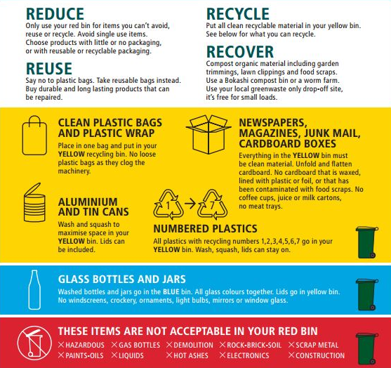

Dunedin
The main body responsible for recycling in Dunedin, is the Dunedin City Council.
Yellow-lidded Wheelie Bin
Each wheelie bin has a serial number and address label on it to identify the property it belongs to. The materials placed in recycling bins must be clean.
You can use yellow-lidded wheelie bins to recycle an extended range of materials:
| Item |
Allowed? |
| Plastics |
| Soft drink and water bottles, salad domes, biscuit trays, detergent bottles, squeezy bottles, fruit punnets, fruit juice bottles, household cleaners and vitamin containers. |
|
| Milk bottles, sunscreen bottles, shampoo bottles, dishwashing powder containers, liquid soap containers |
|
| Plastic bags and soft plastics |
|
| Dip containers, ice cream containers tubs, margarine containers, plastic plates, cups, large yoghurt containers and cutlery. |
|
| Paper and Cardboard |
| Newspaper, letters, envelopes, magazines, receipts, egg trays, telephone books, wrapping paper, advertising material, toilet roll inners, boxes and cartons. |
|
| All milk and juice cartons, waxy paper and cardboard, soiled paper (e.g. with food), juice/tomato sauce/stock boxes and cartons (co-mingled, made with foil, cardboard and plastic) |
|
| Cans and Tins |
| Aluminium tins and cans, steel tins and cans, aluminium trays and foil, aerosol cans, metal pie trays, foil. |
|
| Other |
| Medical Waste – needles and syringes (please contact your nearest pharmacy for free, safe disposal), unwanted/expired medication (please contact your nearest pharmacy for free, safe disposal), medical tubing, colostomy bags, sanitary waste including used nappies. |
|
| Hazardous items - This includes garden chemicals, herbicides, pesticides etc. For all other items of hazardous waste, please seek advice from the Landfill Engineer at DCC on 03 477 4000. |
|
Blue Recycling Bin
Blue bins belong to the property and should have the address written on them. Each household can have up to three blue bins. The recycling service costs form part of your rates.
The blue bins are used for unbroken glass bottles and jars. Your blue bin is collected fortnightly, alternating weeks with the yellow-lidded wheelie bins.
The requirements for the blue recycling bin are:
- Glass should be unbroken
- Glass should be rinsed out
- Only glass bottles and jars can be accepted, not other glass products such as mirrors or sheet glass.
Central Otago
The main body responsible for recycling in Central Otago, is the Central Otago District Council.
Bin Guide

Recycling Centres & Landfills